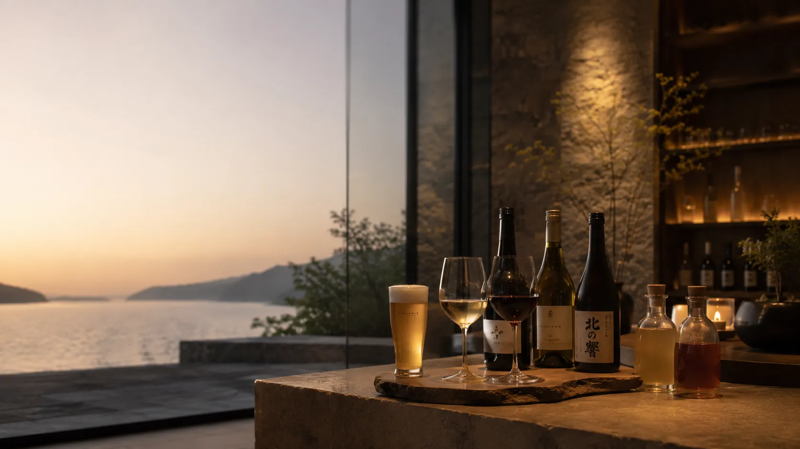
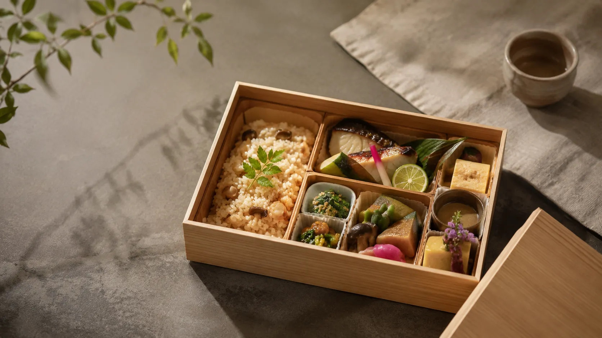
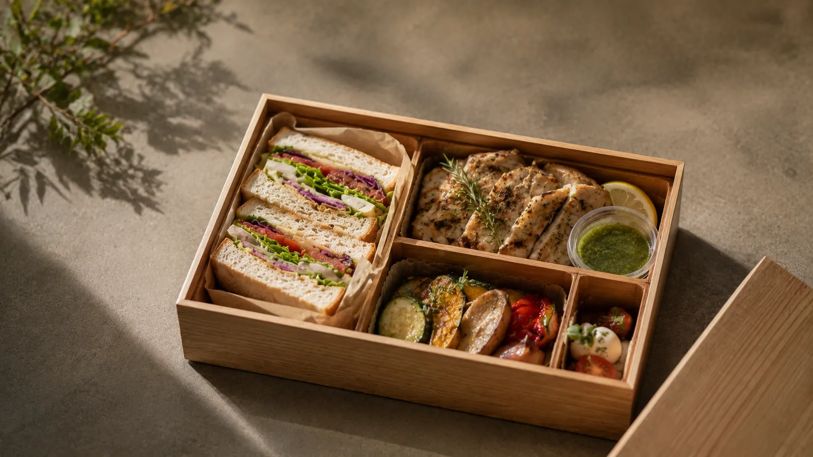
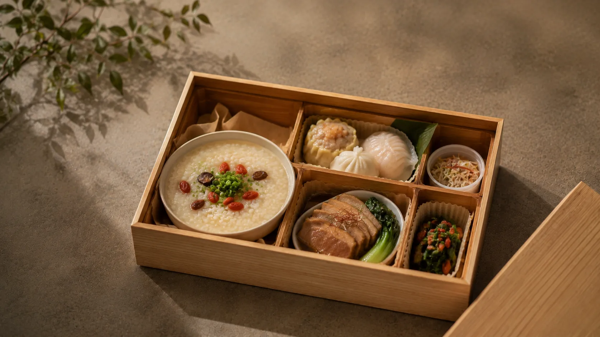
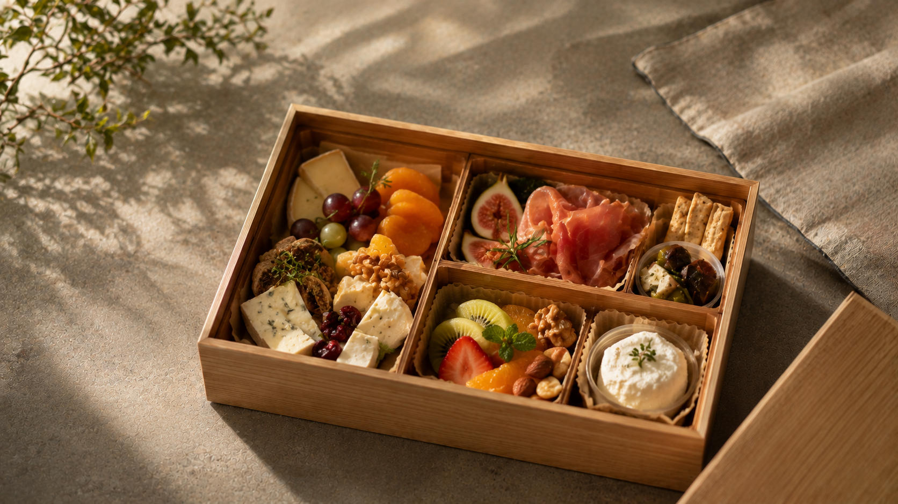

北海道食材を仕立てた
ご褒美ディナー
滋味豊かな地元食材を中心に厳選し、シェフが腕を振るう日替わりのコース料理。
ご連泊の際にも新鮮な驚きをご堪能いただけます。
ご自身へのご褒美となる心尽くしの味わいをご提供いたします。

自由に愉しむペアリングドリンク
当館はオールインクルーシブ仕様となっております。
地元のクラフトビールや厳選されたナチュールワイン、こだわりの日本酒、自家製ソフトドリンクまで、お食事や気分に合わせてお好きなだけお楽しみいただけます。
時間と場所の制約から解放される
「朝陽とともにテラスで」
「夕暮れの湖畔で風を感じながら」
お客様の心赴くままに食を楽しんでいただくため、お持ち歩き可能なスタイリッシュなランチボックスをご用意いたします。

彩り旬彩 和膳ボックス
北海道産米の炊き込みご飯、季節の地魚の焼き物、滋味あふれるお惣菜を少しずつ丁寧に敷き詰めました。朝の静けさのなかでお楽しみいただくのにも最適です。

道産素材のグリル＆サンドイッチ
自家製パンを使った香ばしいサンドイッチと、道産野菜のロースト、ハーブ風味のグリルドチキン。風が心地よいテラスやお部屋でのブランチにピッタリです。

薬膳と厳選素材の点心御膳
体に優しい味わいの薬膳中華粥またはチャーハンを中心に、手作り点心と道産豚のしっとり煮込みをセットに。しっかりエネルギーを満たしたい方に。

プレミアム フィンガーフード＆チーズ
ワインや日本酒に寄り添う、近隣工房のフレッシュチーズやドライフルーツ、生ハムの詰め合わせ。湖畔でのアペリティフタイムやお休み前の小腹を満たす一口に。
Private Room
心からリラックスできる客室のプライベート空間で
Open Terrace
四季折々の風と光を感じる開放的な屋外テラスで
Lakeside & Park
澄んだ空気と静寂に包まれる湖畔やフリースペースで